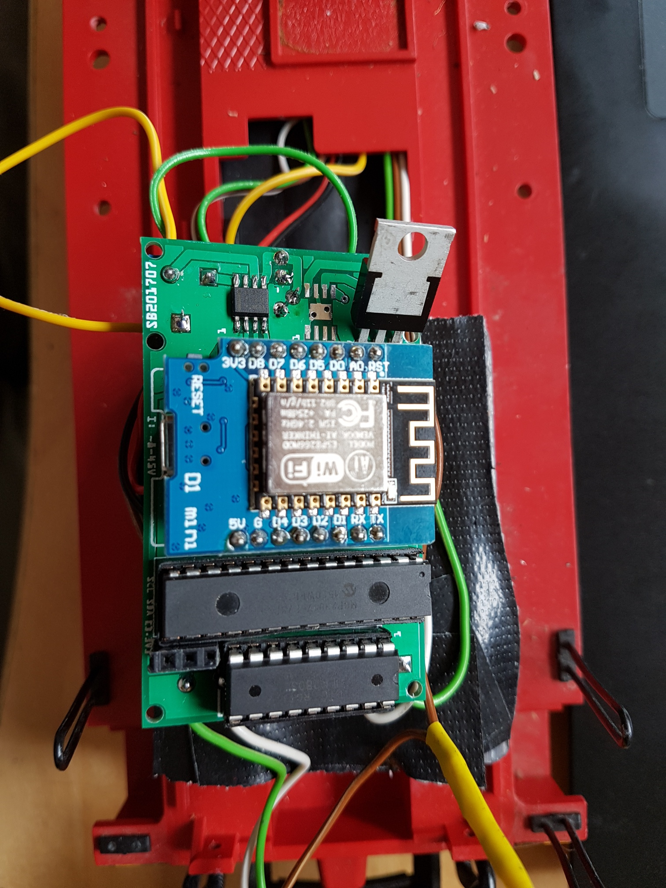

Lokdekoder (DRV8870)
Dieser Dekoder ist wahlweise mit einer oder zwei H-Bridge vom Typ DRV8870 ausgestattet und sollte somit auch für Piko-Loks mit zwei Motoren geeignet sein.

Funktionsumfang
- 2x DRV8870 mit je max 2A
- 8x unverstärkte Ausgänge
- 8x verstärkte Ausgänge
Ansteuerung
Die Lösung kann über 2 Wege gesteuert werden:
- Der Decoder kann sich über WLAN mit einer Z21 verbinden und von dort die Befehle erhalten.
- Der Decoder kann eine Z21 simulieren und ein WLAN-Netz aufspannen. Anschließend kann man den Decoder direkt und ohne die Notwendigkeit einer Z21 ansteuern. Die Z21-App oder die WLAN-Maus kann zur Steuerung genutzt werden.
Schlatplan / Aufbau
Technischer Hintergrund
Um die Anzahl der Ausgänge zu erhöhen, wird ein Port-Expander (MCP23017) genutzt der via i²C an den ESP8266 angeschlossen ist. 8 Ausgänge des MCP23017 steuern einen ULN2803A an. Somit stehen 8 "unverstärkte" und 8 "verstärkte" Ausgänge zur Verfügung.